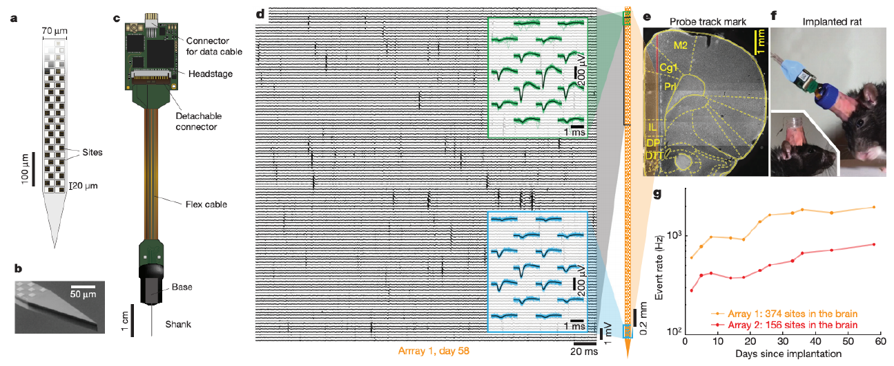

Simple Spike Sorting
Contents
Simple Spike Sorting#

With that background, we come to our first neural data analysis problem: spike sorting. The black vertical stripes in Fig. 6d (reproduced above) are extracellular action potentials (EAPs) measured across adjacent recording channels on the Neuropixel probe, which arise from a spike on a nearby neuron.
The spike sorting problem is to identify the spikes in the multi-channel voltage recording and assign those spikes to individual neurons based on the spike waveform and the channels that were activated.
A simple probabilistic model#
I know we just picked on spherical cows, but there really is value in starting with simplified models. To get started on spike sorting, let’s consider a zoomed out view of a Neuropixels recording, like that shown in Fig. 6d. Specifically, let’s imagine downsampling the 30 kHz time series to 500 Hz. Then we can represent the multi-channel voltage recording as a matrix \(\mathbf{X} \in \mathbb{R}^{C \times T}\) where:
\(C\) is the number of channels
\(T\) is the number of 2 ms time bins
\(x_{c,t}\) is the average voltage on channel \(c\) during time bin \(t\).
At this temporal resolution, each spike is typically contained within a single time bin.
Assumptions#
To model this data, we will make a few assumptions:
Assume there are \(K\) neurons in the vicinity of the probe. When the \(k\)-th neuron spikes, its EAP produces a signature waveform on the channels. We model the waveform as a vector, \(\mathbf{w}_k = (w_{k,1}, \ldots, w_{k,C}) \in \mathbb{R}^C\), where \(w_{k,c}\) represents the average magnitude of the EAP produced on channel \(c\) each time neuron \(k\) spikes.
Let \(\mathbf{a}_k = (a_{k,1}, \ldots, a_{k,T}) \in \mathbb{R}_+^T\) denote the time series of spike amplitudes for neuron \(k\). Since neurons spike only a few times a second, the amplitude is typically zero, but when the neuron does spike it has a positive amplitude.
If two neurons fire at the same, their waveforms add together in the measured voltage.
The voltage recordings are noisy, so in addition to the spike waveforms we also have independent Gaussian noise \(\epsilon_{c,t} \in \mathcal{N}(0, \sigma^2)\) for each channel \(c\) and time bin \(t\).
Warning
Note that the amplitudes are non-negative real numbers (\(a_{k,t} \in \mathbb{R}_+\)). We do not allow spikes with negative amplitude.
The Gaussian distribution#
The Gaussian Distribution
We denote a Gaussian (aka normal) random variable \(x \in \mathbb{R}\) by,
where \(\mu = \mathbb{E}[x]\) is the mean and \(\sigma^2 = \mathbb{V}[x]\) is the variance. The Gaussian pdf is,
The Gaussian distribution has many important properties. For example,linear transformations of \(x\) are also Gaussian:
We will cover more nice properties of the Gaussian distribution as the course goes on.
With these assumptions, we model the measured voltage as a sum of spike waveforms, weighted by the amplitudes, with Gaussian noise:
Matrix factorization perspective#
Here’s another way to view the model. Combine the waveforms and amplitudes into matrices
and let \(\mathbf{E} \in \mathbb{R}^{C \times T}\) denote the noise matrix with entries \(\epsilon_{c,t}\).
Our model is that \(\mathbf{X} = \mathbf{W} \mathbf{A}^\top + \mathbf{E}\). That is, the matrix of voltage measurements is the outer product of the waveforms and the amplitudes.
This is called a matrix factorization model, since the data matrix is modeled as the outer product of two factors (plus noise). In particular, since the amplitudes are constrained to be non-negative and the waveforms are unconstrained, this is a semi-non-negative matrix factorization model [Ding et al., 2008].
Accounting for scale invariance#
Notice that the model is invariant to rescaling. We could multiply the amplitudes \(\mathbf{a}_k\) by any positive constant \(c > 0\) and they would still be non-negative. As long as we multiply the corresponding waveforms by \(c^{-1}\), the product \(\mathbf{W} \mathbf{A}^\top\) remains unchanged.
We can remove this degree of freedom by constraining the weights to be unit norm; i.e. enforce \(\|\mathbf{w}_k\| = 1\) for all \(k\). One way to do this is by giving the waveforms a uniform prior on the unit sphere,
Notation
We denote the unit hypersphere in \(C\) dimensions by
It is a (\(C-1\))-dimensional manifold embedded in \(\mathbb{R}^C\).
The uniform distribution
We denote a random variable \(\mathbf{x} \in \mathbb{X}\) that follows the uniform distribution by
where \(\mathbb{X}\) is the support. It has density
where \(|\mathbb{X}|\) is the volume of \(\mathbb{X}\).
Prior on amplitudes#
To complete the model, we place an exponential prior on amplitudes,
where \(\lambda\) is the inverse-scale (aka rate) parameter.
The Exponential distribution
We denote an exponential random variable \(x \in \mathbb{R}_+\) by,
where \(\lambda\) is the inverse scale or rate parameter. It has mean \(\mathbb{E}[x] = \lambda^{-1}\) and variance \(\mathbb{V}[x] = \lambda^{-2}\). Its pdf is,
Exercise
Compare the gamma pdf from the last chapter to the exponential pdf above. Show that the exponential distribution is a special case of the gamma distribution.
We treat the waveforms and the noise variance as parameters; i.e. we don’t put priors on them.
The joint probability#
Finally, we can write the joint probability,
(As before, we suppressed the dependence on the parameters; i.e., \(\sigma^2\) and \(\lambda\).)
Fitting the model#
Like last time, we will “fit” the model by performing maximum a posteriori (MAP) estimation with coordinate ascent. Specifically, our algorithm will be:
repeat until convergence:
for \(k=1,\ldots,K\):
Set \(\mathbf{w}_k = \text{arg max} \; p(\mathbf{X}, \mathbf{W}, \mathbf{A})\) holding all else fixed
Set \(\mathbf{a}_k = \text{arg max} \; p(\mathbf{X}, \mathbf{W}, \mathbf{A})\) holding all else fixed
Updating the waveforms#
First, consider optimizing the waveforms. Maximizing the joint probability wrt \(\mathbf{w}_k\) is equivalent to maximizing the log joint probability, which is
where
is the residual, and \(c'\) and \(c''\) are constants wrt \(\mathbf{w}_k\).
The solution will become more clear if we write it in vector form. Let \(\mathbf{r}_t = (r_{1,t}, \ldots, r_{C,t})\) denote the vector of residuals. Then we can get rid of the sum over channels and write the log joint probability as,
where we have taken this opportunity to introduce the multivariate normal distribution.
The multivariate normal distribution
The multivariate normal distribution is the multi-dimensional generalization of the scalar Gaussian/normal distribution introduced above. We denote a multivariate normal random variable \(\mathbf{x} \in \mathbb{R}^D\) by,
Its density is,
When \(\boldsymbol{\Sigma} = \sigma^2 \mathbf{I}\), we call it a spherical Gaussian distribution. Then its density reduces to a product of scalar Gaussian densities, implying that the entries of \(\mathbf{x}\) are independent Gaussian random variables.
Exercise
Prove the equality between the spherical Gaussian densities and the product of scalar Gaussian densities.
Finishing the optimization#
To complete the optimization wrt \(\mathbf{w}_k\), let’s further expand the multivariate density and drop terms that don’t depend on the variable of interest,
The log-indicator simply captures that this is a constrained optimization problem: \(\mathbf{w}_k\) must be a normalized vector, otherwise this term is negative infinity. Note that \(\mathbf{w}_k^\top \mathbf{w}_k = 1\) for all \(\mathbf{w}_k \in \mathbb{S}_{C-1}\), so the second term in parentheses is actually a constant for all valid \(\mathbf{w}_k\).
Thus, maximizing with respect to \(\mathbf{w}_k\) amounts to solving the following constrained optimization problem,
where \(\mathbf{R} \in \mathbb{R}^{C \times T}\) is the matrix of residuals with columns \([\mathbf{r}_1, \ldots, \mathbf{r}_T]\).
Maximing this linear objective subject to a unit norm constraint has a well known solution — make \(\mathbf{w}_k\) parallel to the other vector in the inner product:
Updating the amplitudes#
Now let’s derive updates for the amplitudes. As a function of \(a_{k,t}\), the log joint probability is,
Maximizing wrt \(a_{k,t}\) is simply maximizing a quadratic objective over the non-negative reals,
Quadratic optimzation with non-negativity constraints
To solve the constrained optimization problem, \(\max_{x \geq 0} f(x)\) with
and \(\alpha > 0\), note that the objective is concave and the unconstrained solution is at \(x^\star = \beta / \alpha\). If \(x^\star < 0\), then \(f(x)\) must be decreasing at \(x=0\) so that the constrained optimum is at,
and the solution is,
From the box above, we have,
The first term, \(\mathbf{r}_{t}^\top \mathbf{w}_{k}\), is the projection of the residual onto the waveform for neuron \(k\). The product of hyperparameters \(\lambda\) and \(\sigma^2\) defines the threshold that projection must exceed in order to designate a spike in amplitude.
In vector form, this simplifies to
Shrinkage
Note that even if the projection \(\mathbf{r}_{t}^\top \mathbf{w}_{k}\) exceeds the threshold, the optimal amplitude is still “shrunk” by a factor of \(\lambda \sigma^2\). This is a common feature of \(\ell_1\) optimization problems; i.e., optimization problems with regularization on the \(\ell_1\) norm of the solution. The exponential prior on amplitudes induces such an optimization problem, and indeed there is a close correspondence between MAP estimation in Bayesian models with exponential priors and maximum likelihood estimation with \(\ell_1\) regularization, like the LASSO problem [Hastie et al., 2009].
The final algorithm#
Now that we have derived both updates, we can revise our final algorithm slightly:
repeat until convergence:
for \(k=1,\ldots,K\):
Compute the residual \(\mathbf{R} = \mathbf{X} - \sum_{j \neq k} \mathbf{w}_j \mathbf{a}_j^\top\)
Set \(\mathbf{w}_k \propto \mathbf{R} \mathbf{a}_k\)
Set \(\mathbf{a}_k = \max \{0, \, \mathbf{R}^\top \mathbf{w}_k - \lambda \sigma^2 \}\)
Note
You don’t have to recompute the residual from scratch each iteration. Just do a rank one update after each iteration.
Conclusion#
This chapter introduced the spike sorting problem for electrophysiological (“ephys”) recordings with modern tools like Neuropixels. The same strategy applies to other ephys methods, like dense multielectrode arrays.
In this first pass, we framed the problem as one of semi-non-negative matrix factorization, or semi-NMF. We took a Bayesian approach, with priors on the waveforms and amplitudes. We derived a coordinate ascent algorithm for MAP estimation and found that the updates have pleasingly simple form.
However, we made an undesirable assumption in deriving this algorithm: we started by downsampling our voltage traces to the point that a spike fit within a single time bin. What is the point of recording at 30kHz if we are going to average into 2ms bins!? In the next chapter, we will relax this assumption and show how to do spike sorting with a convolutional matrix factorization model.
Further Reading#
Modeling via matrix factorization is one of those great ideas that has been discovered over and over again. In the probabilistic machine learning literature, some nice references include:
[Tipping and Bishop, 1999]: develops probabilistic PCA, an unconstrained matrix factorization
[Lee and Seung, 1999]: non-negative matrix factorization
[Roweis and Ghahramani, 1999]: PCA, sparse PCA, ICA, etc. as linear Gaussian models
[Mnih and Salakhutdinov, 2007]: an unconstrained matrix factorization for the Netflix challenge
[Ding et al., 2008]: semi-NMF and other related models
[Gopalan and Blei, 2013]: Poisson matrix factorization
Many models are really matrix factorization in disguise. For example, latent Dirichlet allocation [Blei et al., 2003] is quite similar to NMF.
I don’t know of a reference for our specific model with norm constraints and exponential priors for spike sorting. However, it falls nicely within this broader landscape of matrix factorization methods, and it leads nicely to the model people actually use, as we’ll see next.